Nave vs aliens
El este tutorial explicaremos paso a paso cómo desarrollar el ejemplo “Nave Contra Aliens” de Pilas Engine. El mismo se basa en una nave manejada por el jugador con las flechas del teclado, que dispara misiles a aliens que se generan aleatoriamente en la pantalla. Mientras más aliens destruya, mayor va a ser el puntaje final.
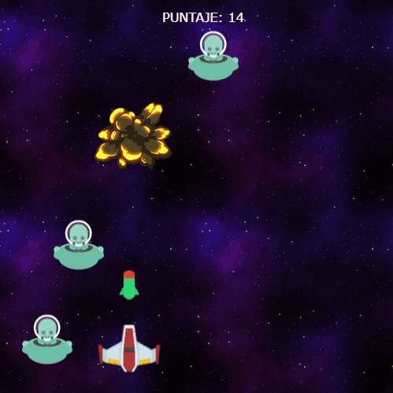
¡Comencemos!
Paso 1
Para empezar, abriremos el editor de pilas, y eliminaremos a todos los actores iniciales de la escena1, y crearemos un nuevo actor seleccionando en la sección de “ESCENAS Y ACTORES” la opción “Crear actor”:
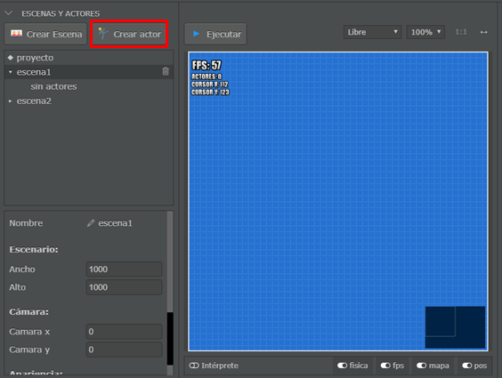
Al elegir esta opción, saldrá una nueva ventana en la cual seleccionaremos la opción “actor”:
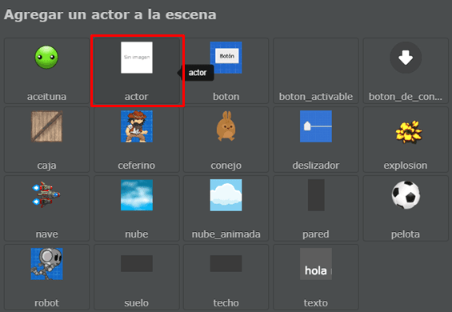
Una vez creado el nuevo actor, modificaremos alguna de sus propiedades. Cambiaremos su imagen y posición. Para ello, iremos a la propiedad imagen del actor, y elegiremos la imagen de la nave de la siguiente forma:
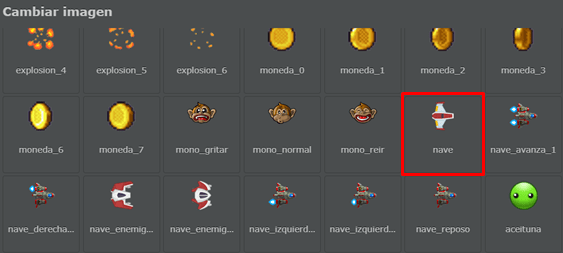
Luego cambiemos la posición x e y de la nave, y además démosle una rotación de 90° para que
apunte hacia arriba, las propiedades deberían quedar así:
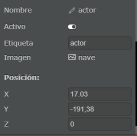
Ahora le agregaremos código para que nuestra nave pueda desplazarse en cualquier dirección en la escena. Para lograr esto, iremos a la sección ‘EDITOR DE CÓDIGO’ ubicada a la derecha del editor, y agregaremos el siguiente fragmento de código:
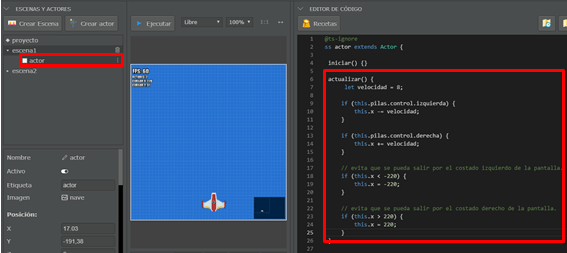
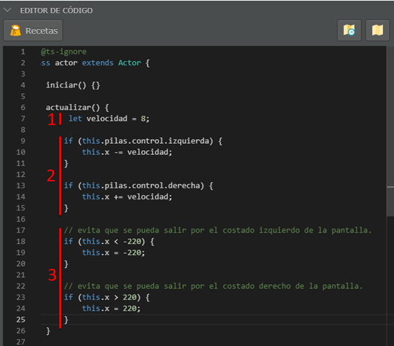
-
En la función
actualizar()crearemos una variable “velocidad” la cual, como su nombre indica, utilizaremos para establecer la velocidad con la cual se desplazará la nave en la pantalla. Cada uno puede modificar este valor a uno que le parezca conveniente, en nuestro caso le daremos a la nave una velocidad de8. -
Siguiente, agregaremos estas dos condiciones
ifpara que el jugador pueda utilizar las flechas derecha e izquierda del teclado para mover la nave en dichas direcciones. La primera de estas funciones le resta el valor develocidada la posición horizontal de la nave cada vez que se aprieta la tecla izquierda, y le suma ese valor cuando se aprieta la tecla derecha. -
Las últimas dos condiciones
ifse utilizan para que la nave no salga de los bordes de la pantalla.
De momento, el juego con la nave quedaría así:
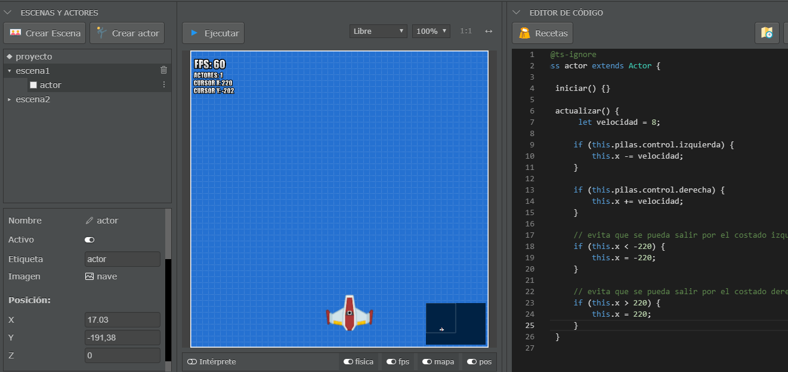
Paso 2
Ahora agregaremos los aliens a los que dispararemos con la nave. Para ello, crearemos un nuevo actor, seleccionando la opción “Crear actor”, y elegiremos, como en el caso de la nave, la opción “actor”.
A este actor le cambiaremos algunas propiedades, entre ellas, su nombre, la posición en la pantalla, la imagen y su figura. En cuanto a la imagen, haremos click en la propiedad “imagen” y en la pantalla emergente seleccionaremos “alien_verde”.
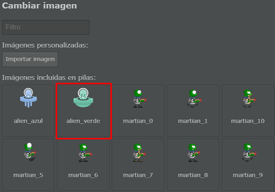
En este caso, le cambiaremos el nombre a “enemigo”, y le añadiremos una figura de rectángulo para determinar cuando el alien colisiona contra otro actor, como por ejemplo, contra un misil. A esta figura la adaptaremos en ancho y alto para que sea más adecuada a la figura del enemigo. También habilitaremos la opción “¿Es Sensor?” para que al colisionar con la nave la traspase, y deshabilitaremos la opción “Dinámica” para evitar que los enemigos caigan antes de tiempo por la ‘gravedad’ del juego.
Finalmente, las propiedades del alien serán:
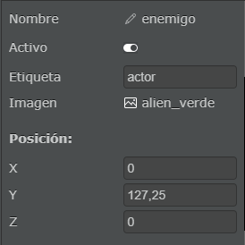
Respecto al código de este actor, en un principio añadiremos una de las recetas predefinidas de pilas, haciendo click en la opción “Recetas” de la sección “EDITOR DE CÓDIGO”.
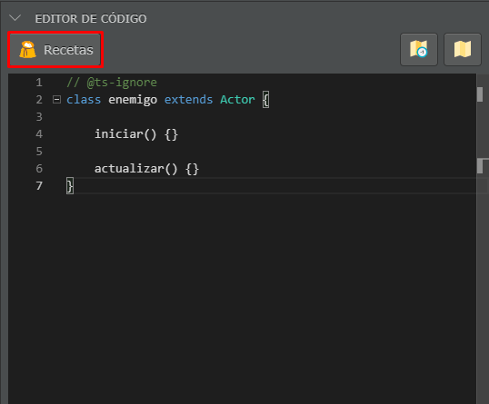
En la ventana emergente, seleccionaremos la receta “Cambiar la posición del actor al azar cuando comienza”.
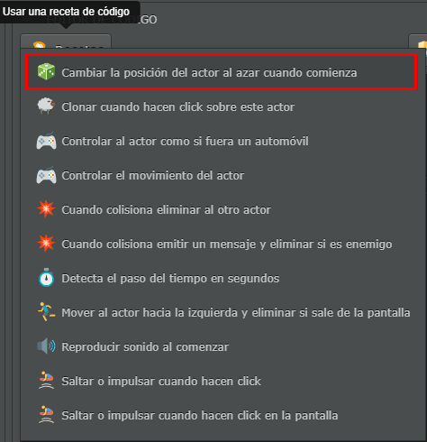
Esta receta generara una función iniciar() la cual crea aleatoriamente al actor en la posición
“x” y en la posición “y”. Como el enemigo solo se moverá hacia abajo, dejaremos la generación en el
espacio “x” para dar el efecto de ‘lluvia’ de aliens, y en cuanto a la posición “y”, la definiremos
fuera de la pantalla para que no parezca que aparecen ‘por arte de magia’.
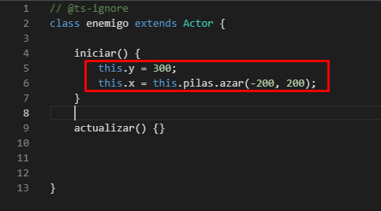
Para eliminar al alien cuando salga por la parte inferior de la pantalla podemos, o crear una nueva
receta en su código llamada “Mover el actor hacia la izquierda y eliminar si sale de la pantalla” y
modificar su código a gusto, o directamente agregar el código que nos permita mover el actor hacia
abajo cada vez que se actualice (this.y -= 2) y eliminarlo cuando salga de la pantalla.
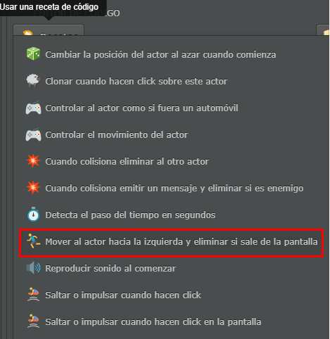
Indistintamente de lo que elijamos, el código será el siguiente:
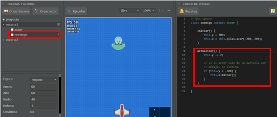
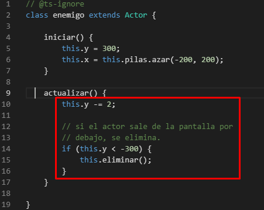
Terminado este paso, la escena quedara así:
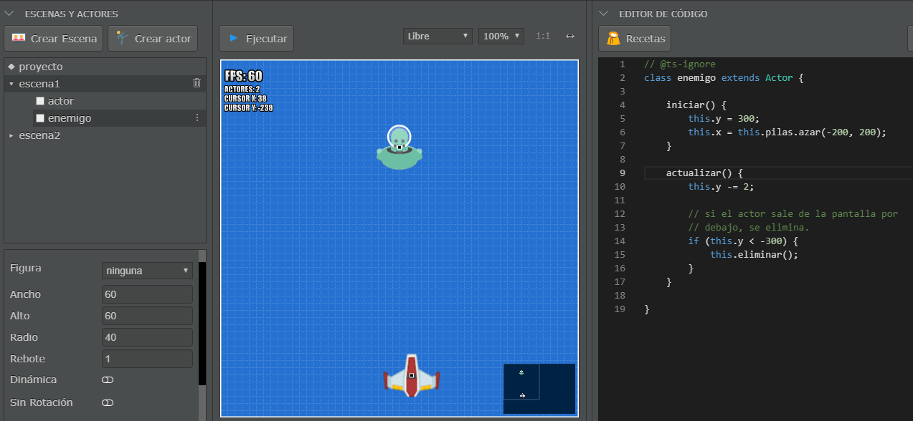
Paso 3
Ahora agregaremos el misil con el cual destruiremos a las naves enemigas. Lo primero que haremos será crear un nuevo actor con la opción “Crear actor”, y luego en la ventana emergente elegiremos la opción “actor:
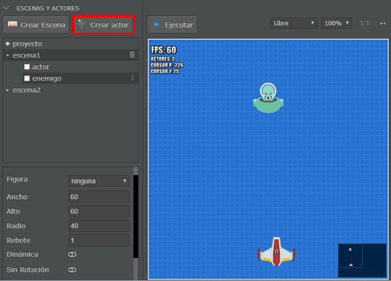
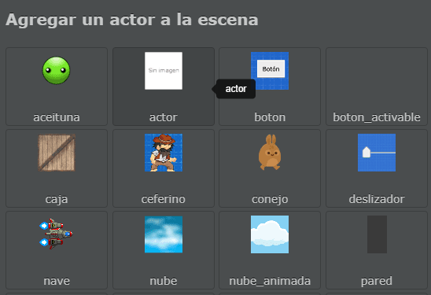
Una vez creado el nuevo actor, modificaremos algunas de sus propiedades: cambiaremos su nombre a “disparo”, deshabilitaremos la opción “Activo” para que no aparezca visible cuando el juego comience, elegiremos la imagen “misil”, lo rotaremos 90° para que mire hacia arriba, le deshabilitaremos la opción “Dinámica” para que permanezca en su posición durante el juego y no caiga, habilitaremos la opción “¿Es Sensor?” para que al tocar otro actor lo atraviese y no modifique su trayectoria, y le definiremos una figura circular y la adaptaremos a las medidas del misil para saber cuándo choca contra una nave alienígena. Las propiedades resultantes serán:
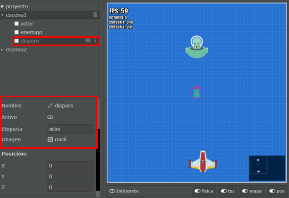
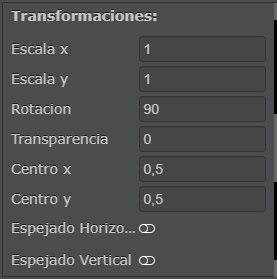
Al igual que en el código del actor enemigo, deberemos agregar las funciones que nos permitan mover hacia arriba el misil, y eliminarlo cuando desaparezca de la pantalla. Esto podemos hacerlo con la receta “Mover el actor hacia la izquierda y eliminar si sale de la pantalla” y modificándola para que sea idéntico al siguiente código:
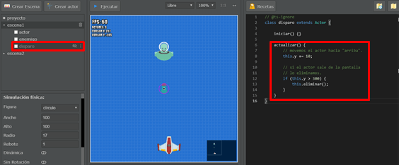
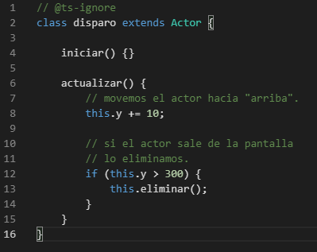
Al agregar el misil, deberemos de modificar el código tanto de los enemigos como de la nave, para que los misiles salgan desde la posición en la que se encuentre la nave, y que si llegan a hacer contacto con alguna nave enemiga la derribe y se elimine.
Comenzaremos con el código de la nave:
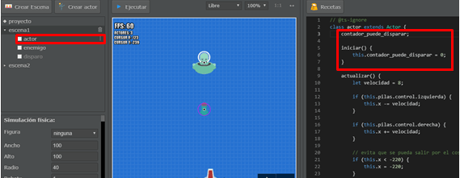
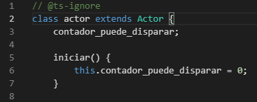
Crearemos una nueva variable “contador_puede_disparar” que iniciaremos en cero, y que calcula cada
cuanto tiempo se puede disparar un misil. Además, añadiremos una función que llamaremos
disparar() que asigna el valor ‘20’ a la variable “contador_puede_disparar” y clona al actor
misil en la posición en la que se encuentra la nave del jugador. A su vez, cada vez que se
actualice la pantalla se le descontara una unidad a “contador_puede_disparar”, y agregaremos al
final de actualizar(), un condicional if que ejecutará la función disparar() anteriormente
definida cada vez que el jugador presiona la barra espaciadora y cuando la variable
“contador_puede_disparar” llegue a cero:
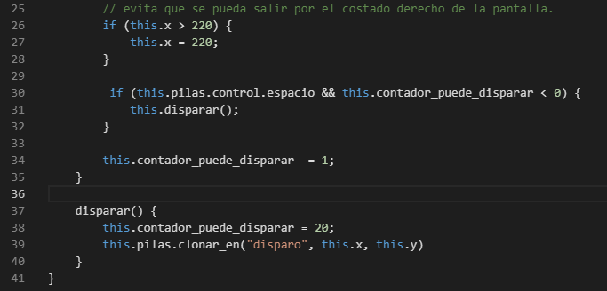
Por último, modificaremos el código del enemigo para que sea eliminado cuando colisione con un
misil. Para lograrlo, crearemos una función llamada cuando_colisiona():
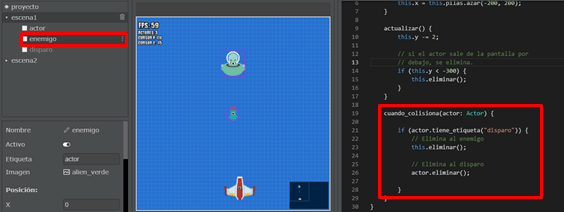
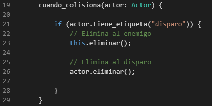
Con esto eliminaremos al misil y al enemigo cuando colisionen.
Para agregarle más realismo al juego, agregaremos un efecto de explosión en la colisión entre el misil y el alien. Para eso, agregaremos dentro del código del enemigo lo siguiente:
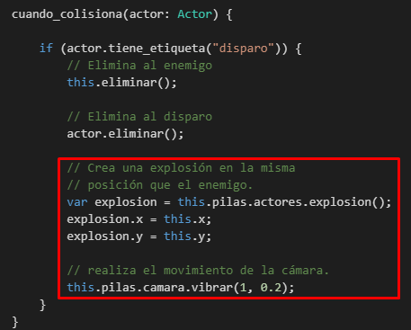
Por un lado, creamos la variable explosión que va a contener el efecto del actor explosión en la posición en la que se encuentra la nave que tuvo contacto con el misil. Por el otro lado, programamos que la cámara vibre para simular un escenario más real de la explosión.
El juego al final del paso 3 quedará:
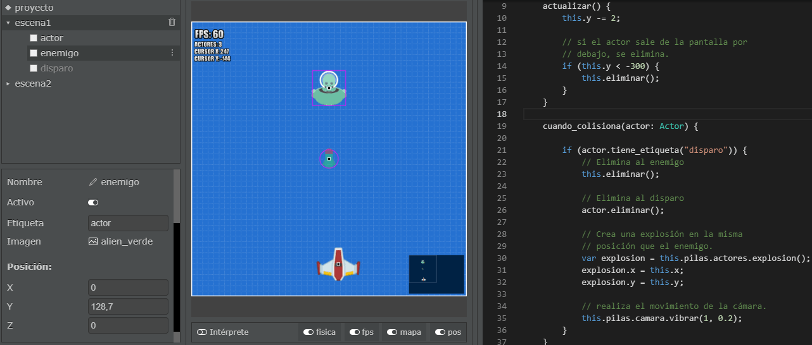
Paso 4
En este último paso cambiaremos el fondo del juego y agregaremos un contador de puntos.
Para establecer un fondo del espacio a la escena, iremos a las propiedades de la misma y en la sección “Apariencia” modificaremos el fondo.
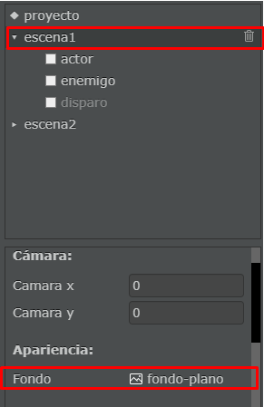
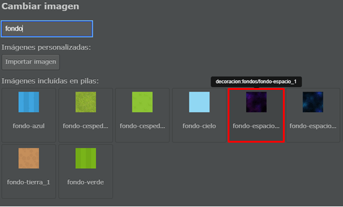
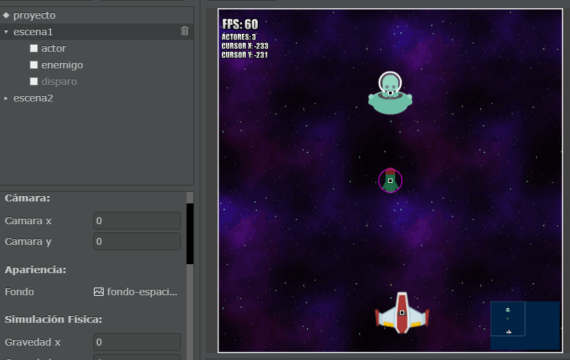
Además, en el editor de código de la escena1 añadiremos la receta “Crear actores cada determinado tiempo en segundos” para generar varias naves enemigas en el juego.
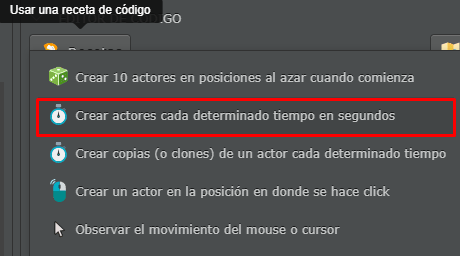
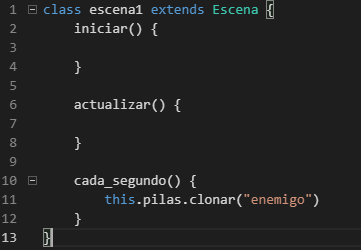
Una vez terminada la configuración de la escena, deberemos crear nuestro último actor del juego, el puntaje. Para hacerlo, seleccionaremos la opción crear actores, y en la ventana emergente elegiremos la opción “puntaje”.
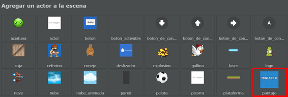
A continuación, cambiaremos su posición:
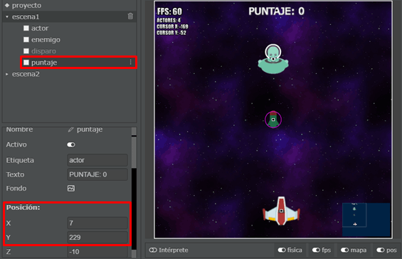
Finalmente, para culminar con este tutorial, deberemos agregar dentro de la función
cuando_colisiona() del actor enemigo una función que aumente en 1 el puntaje del jugador cada vez
que se destruye una nave alien. Para ello:
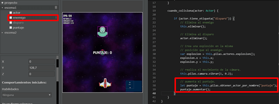
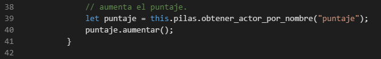
El juego completamente terminado tendrá la siguiente forma:
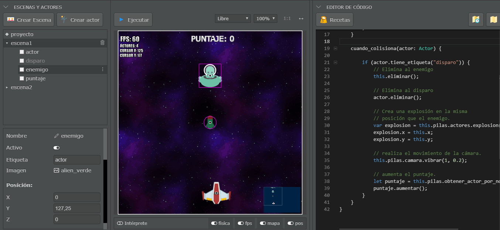
Aquí termina el tutorial de nave contra aliens. Es posible agregarle algunas mejoras, como por ejemplo un contador de vidas, que disminuya cada vez que algún enemigo toque el borde inferior del juego o colisione contra el jugador, y que cuando llegue a cero aparezca un mensaje de ‘Game Over’.
Ahora solo queda pulsar el botón “Ejecutar” y disfrutar del juego.
¡Muchas gracias por leerlo!